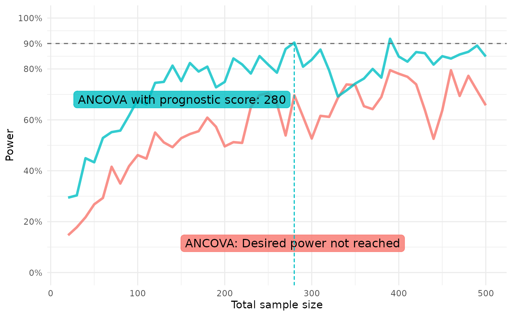

library(postcard)
withr::local_seed(1395878)
withr::local_options(list(postcard.verbose = 0))Estimating the power for marginal effects
The method proposed in Powering RCTs for marginal
effects with GLMs using prognostic score adjustment by
Højbjerre-Frandsen et. al (2025), which can be used to estimate the
power when estimating any marginal effect, is implemented in the
function power_marginaleffect().
An introductory example is available in
vignette("postcard"), but here we describe how to specify
arguments to change the default behavior of the function to align with
assumptions for the power estimation.
Simulating some data
We generate count data to showcase the flexibility of
power_marginaleffect() that does not assume a linear
model.
n_train <- 2000
n_test <- 200
b1 <- 0.9
b2 <- 0.2
b3 <- -0.4
b4 <- -0.6
train_pois <- glm_data(
Y ~ b1*log(X1)+b2*X2+b3*X3+b4*X2*X3,
X1 = runif(n_train, min = 1, max = 10),
X2 = rnorm(n_train),
X3 = rgamma(n_train, shape = 1),
family = poisson()
)
test_pois <- glm_data(
Y ~ b1*log(X1)+b2*X2+b3*X3+b4*X2*X3,
X1 = runif(n_test, min = 1, max = 10),
X2 = rnorm(n_test),
X3 = rgamma(n_test, shape = 1),
family = poisson()
)Controlling assumptions
As a default, the variance in group 0 is estimated from the sample
variance of the response, and the variance in group 1 is assumed to be
the same as the estimated variance in group 0. Use argument
var1 to change the variance estimate in group 1, either
with a function that modifies the estimate obtained for group 0 or as a
numeric. The same is true for the MSE, where
kappa1_squared as a default is taken to be the same as the
MSE in group 0 unless a function or numeric is
specified.
Below is an example showcasing the different ways to specify
var1 and kappa1_squared used to adjust the
assumptions according to prior beliefs. In practice, if wanting to
specify either of these arguments as just a numeric, you will likely do
a calculation on some historical data, whereas here we just put some
number to showcase.
Note that we fit a prognostic model using
fit_best_learner()and use this as our prediction in accordance with the guidance in the main reference to obtain a conservative power estimate of estimating a marginal effect in a GLM that adjusts for the prognostic score as a covariate alongside other covariates.
lrnr <- fit_best_learner(list(mod = Y ~ X1 + X2 + X3), data = train_pois)
preds <- dplyr::pull(predict(lrnr, new_data = test_pois))
power_marginaleffect(
response = test_pois$Y,
predictions = preds,
var1 = function(var0) 1.1 * var0,
kappa1_squared = 2,
estimand_fun = "rate_ratio",
target_effect = 1.4,
exposure_prob = 1/2,
margin = 0.8
)
#> [1] 0.9871395
#> attr(,"samplesize")
#> [1] 200
#> attr(,"target_effect")
#> [1] 1.4
#> attr(,"exposure_prob")
#> [1] 0.5
#> attr(,"estimand_fun")
#> function (psi1, psi0)
#> psi1/psi0
#> <bytecode: 0x5629c1e36c50>
#> <environment: 0x5629c1e36e48>
#> attr(,"margin")
#> [1] 0.8
#> attr(,"alpha")
#> [1] 0.05The function repeat_power_marginaleffect() allows
passing arguments along to power_marginaleffect(), so we
are able to quickly create power curves for the above case.
We define our models in a named list and define a function of a
single parameter - the sample size n - that simulates the
test data with the same structure as above but for different sample
sizes.
ancova_prog_list <- list(
ANCOVA = glm(Y ~ X1 + X2 + X3, data = train_pois, family = poisson),
# "Null model" = glm(Y ~ 1, data = train_pois, family = poisson),
"ANCOVA with prognostic score" = fit_best_learner(list(mod = Y ~ X1 + X2 + X3), data = train_pois)
)
test_pois_fun <- function(n) {
glm_data(
Y ~ b1*log(X1)+b2*X2+b3*X3+b4*X2*X3,
X1 = runif(n, min = 1, max = 10),
X2 = rnorm(n),
X3 = rgamma(n, shape = 1),
family = poisson()
)
}We then run the power estimation and plot the results:
rpm <- repeat_power_marginaleffect(
model_list = ancova_prog_list,
test_data_fun = test_pois_fun,
ns = seq(20, 500, by = 10), n_iter = 20,
var1 = function(var0) 1.1 * var0,
kappa1_squared = function(kap0) 1.1 * kap0,
estimand_fun = "rate_ratio",
target_effect = 1.4,
exposure_prob = 1/2,
margin = 0.8
)
#> Estimating power across sample sizes `n_iter` times ■■■■ …
#> Estimating power across sample sizes `n_iter` times ■■■■■■■■■■ …
#> Estimating power across sample sizes `n_iter` times ■■■■■■■■■■■■■■■■ …
#> Estimating power across sample sizes `n_iter` times ■■■■■■■■■■■■■■■■■■■■■■ …
#> Estimating power across sample sizes `n_iter` times ■■■■■■■■■■■■■■■■■■■■■■■■■■■…
#> Estimating power across sample sizes `n_iter` times ■■■■■■■■■■■■■■■■■■■■■■■■■■■…
plot(rpm)